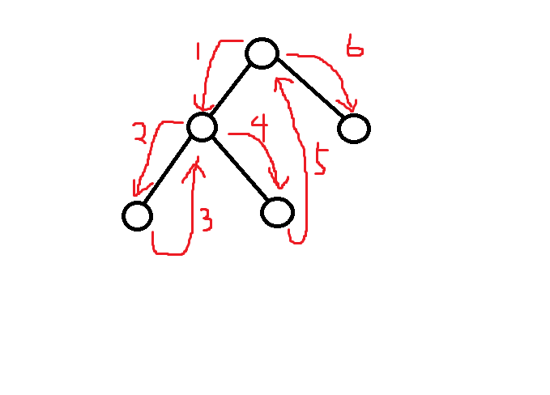

Morris Traversal
Problem Link: ACMOJ1826
Background
遍历一棵 二叉 树？那必然是 DFS 啊，好写又快，就算考虑到递归层数太多爆栈，写 BFS 就好了啊。
但是，如果只用 \(O(1)\) 的额外空间呢？DFS 的话可能要用 \(O(N)\) 的空间诶（当树退化成一条链的时候）。
for i = 1 to n
（注意下，不要搞，也没必要搞一些小聪明，比如说把边取负来标记这条边有没有访问过这些，完全没必要啊）
这时候，Morris Traversal 就可以不用递归、不用栈/队列、只用 \(O(1)\) 额外空间遍历一棵树。
Morris' tree traversal algorithm reconsidered
Morris Traversal
我们先来讲述一下算法的流程。
- 当前结点为 \(u\)，算法最开始时设为根结点。
- 如果 \(u\) 没有左儿子，将 \(u\) 设为它的右儿子（即往右走），回到步骤 1。
- 找到 \(u\) 左子树中最“右”的结点 \(v\)（最右的结点指的是中序遍历最后遍历到的结点，可以通过从 \(u\) 的左儿子不断往右找到）。
- 如果 \(v\) 没有右儿子，那么将 \(v\) 的右儿子设为 \(u\)，然后把 \(u\) 设为 \(u\) 的左儿子（即往左走），回到步骤 1。
- 如果 \(v\) 的右儿子是 \(u\)，将 \(v\) 的右儿子改回空，然后把 \(u\) 设为 \(u\) 的右儿子（即往右走），回到步骤1。（注：\(v\) 的右子树只有可能是这两种情况）
这个算法为什么是正确的呢？
当前我们在 \(u\)，我们将会把左子树遍历一遍，然后继续遍历右子树。左子树中的最右结点 \(v\) 本来是没有右儿子的，我们把它的右儿子设为 \(u\)，这样，在遍历完左子树到达最后（中序）遍历到的结点 \(v\) 的时候，由于 \(v\) 的右儿子是非空的，我们将会继续遍历 \(v\) 的右儿子，实际上我们却回到了结点 \(u\)，然后再找左子树中最右节点就可以发现它的右儿子已经设为 \(u\)，说明 \(u\) 实际上并不是 \(v\) 的右子树，并且 \(u\) 的左子树已经遍历完了，可以开始遍历右子树了，于是把 \(u\) 设为它的右儿子然后继续遍历。

可以发现，我们现在的遍历顺序是前序遍历。只要稍加修改，就可以变成中序遍历。
那么，问题来了，怎样用 \(O(1)\) 额外空间实现后序遍历？最佳回答：我不知道。